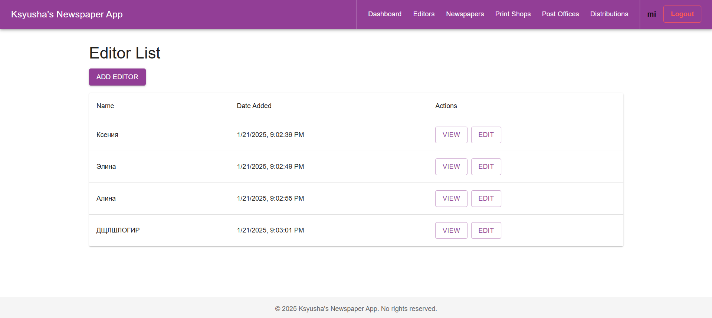

Лабораторная работа №4
Overview
This documentation describes the frontend part of the Ksyusha's Newspaper App project. The application is built using React, TypeScript, and Material-UI for the user interface with a Django backend. It includes authentication, CRUD operations, a dynamic dashboard with graphs, and various management features.
Entities: editors, newspapers, printshops, post offices, distributions.
Technologies Used
- React (v18+)
- TypeScript
- Material-UI
- Recharts (for charts and graphs)
- React Router v6
- Axios (for API calls)
Key Interfaces
AuthContext
The AuthContext interface defines the structure for authentication logic in the application.
interface AuthContextType {
token: string | null;
login: (username: string, password: string) => Promise<void>;
register: (username: string, password: string) => Promise<void>;
logout: () => void;
}
- token: Stores the authentication token.
- login: Authenticates the user and stores the token.
- register: Registers a new user and logs them in.
- logout: Clears authentication data and redirects the user to the login page.
Distribution
The Distribution interface represents the data structure for a distribution entity.
interface Distribution {
id: string;
newspaper: {
id: string;
name: string;
};
printshop: {
id: string;
name: string;
address: string;
};
postoffice: {
id: string;
office_number: number;
address: string;
};
copies_printed: number;
copies_sent: number;
created_at: string;
updated_at: string;
}
- id: Unique identifier for the distribution.
- newspaper: Information about the associated newspaper.
- printshop: Details about the printshop where the newspaper was printed.
- postoffice: Information about the post office where copies were sent.
- copies_printed: Total number of copies printed.
- copies_sent: Number of copies sent to the post office.
- created_at: Timestamp of record creation.
- updated_at: Timestamp of the last update.
Authentication
AuthContext
Located at src/context/AuthContext.tsx
The authentication context provides centralized state management for user authentication. - login: Sends credentials to the backend and stores the authentication token. - register: Registers a new user, logs them in, and stores the token. - logout: Clears authentication data from localStorage and resets the state.
Login Page
Located at src/components/Auth/Login.tsx
const handleLogin = async (values: { username: string; password: string }) => {
await authContext.login(values.username, values.password);
navigate('/dashboard');
};
The login page validates user credentials and redirects to the dashboard upon successful authentication.
Header Component
Located at src/components/layout/Header.tsx
- Provides navigation links to key sections.
- Displays the username of the authenticated user.
- Includes a logout button to clear authentication data.
- Uses Divider for visual separation between sections.
Example Snippet:
<Button onClick={handleLogout} variant="outlined" color="error">
Выйти
</Button>
The logout button is styled to stand out from regular navigation buttons.
Dashboard
Located at src/pages/Dashboard.tsx
The dashboard aggregates statistical data and visualizes it using Recharts.
- Bar Charts: Show data trends.
- Pie Charts: Represent categorical data.
- Search Filters: Allow dynamic querying of statistical data.
- Interactive Widgets: Provide insights at a glance.
Example Graph Integration:
<ResponsiveContainer width="100%" height={300}>
<BarChart data={lowCirculationData}>
<XAxis dataKey="newspaper" />
<YAxis />
<Bar dataKey="copies" fill="#8884d8" />
</BarChart>
</ResponsiveContainer>
CRUD for Distribution
Located at src/pages/distributions
- List: Fetch and display all distribution records.
- Detail: Show specific distribution details.
- Form: Allow creating and updating distribution records.
Running the Project
- Run the django project from the previos lab work at
http://localhost:8000. - Install dependencies:
npm install
- Start the development server:
npm start
- Access the app at
http://localhost:3000.
Interface
